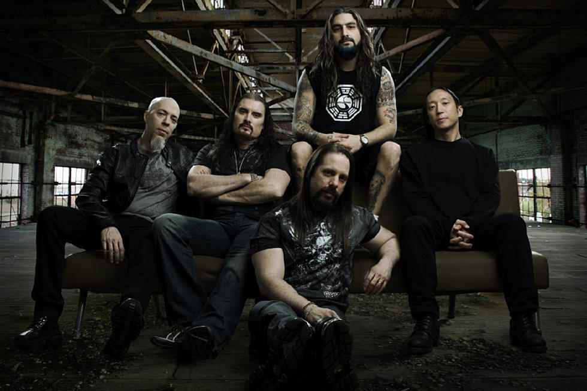
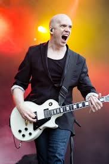

Progressive Metal
Influences
Progressive Metal, as it's name suggests, has it's roots in a combination of Progressive Rock and Heavy Metal.
Progressive Rock hit it's peak in the mid 1980s when bands such as Rush, Yes, King Crimson and Pink Floyd reached massive commercial success with progressive rock. These band's massive success led to Progressive Rock influencing a wide variety of music genres, including Heavy Metal.
Many Progressive Metal bands include a variety of unorthodox influences such as those from Middle Eastern Music, Classical Music, Jazz Fusion, Ragtime, Hot Jazz and many others.
Description
Progressive Metal combines the loud, aggressive, distorted instrumentation that is commonplace in heavy metal, with the more experimental, classical and jazz influenced Prog Rock. Performers of Progressive Metal are almost always incredibly technically skilled with their instruments, and this is usually showcased with extravagant instrumental sections in their songs.
Progressive Metal is also very diverse with the sounds within itself. With the Keyboard being almost as ubiquitous as the guitar in Progressive Metal, a whole new world of sounds that are traditionally unorthodox in metal are opened up for the band to experiment with, including anything from ethereal synthesizer sounds to saxophones and string sections.
Bands like Dream Theater and Animals as Leaders have a more Jazz Fusion influence, while artists such as Symphony X take influence from Classical Pieces and Devin Townsend uniquely borrows quite a bit of influence from Ambient Music, however, they all share the commonality of taking root in Prog Rock and Heavy Metal. Dream Theater is most often and affectionatly referred to as "a marriage between Rush and Metallica."
Brief History
Progressive Metal began to cement itself as a genre of it's own in the mid to late 80s with the "Big Three" of Progressive Metal, Fates Warning, Queensryche and Dream Theater, gaining a large following in that time. The development of Progressive Metal has been quite non-linear, with Progressive Metal bands experimenting with fusing various Metal subgenres with Progressive Metal over the past couple of decades.
Most prominently, heavy metal bands such as Iron Maiden and thrash metal bands such as Metallica and Megadeth began experimenting with Progressive Influences on their records. Dream Theater also most notably combined Thrash Metal with Progressive influence, leading them to affectionately be called "A marriage between Metallica and Rush."
As of 2019, bands are still experimenting, creating various microgenres such as Progressive Black Metal and Progressive Industrial Metal. Progressive Metal, while not huge in the underground scene due to how technically demanding it is, various Progressive Metal giants still have a cult following and Technical Death Metal band Gojira and Progressive Sludge Metal band Mastodon currently have a huge mainstream following.
Examples
- Dream Theater
- Symphony X
- Devin Townsend
- Liquid Tension Experiment
- Opeth
- Between the Buried and Me
- Animals as Leaders
- Meshuggah
- Periphery
- Tesseract
Subgenres and Regional Scenes
Major Subgenres
Technical Death Metal is a style that combines Death Metal and Progressive Metal. These bands include Meshuggah, Deicide and Gojira.
Progressive Metalcore, also sometimes referred to as "Djent", is a style pioneered by bands such as Periphery and Born Of Osiris that combines Metalcore and Progressive Metal.